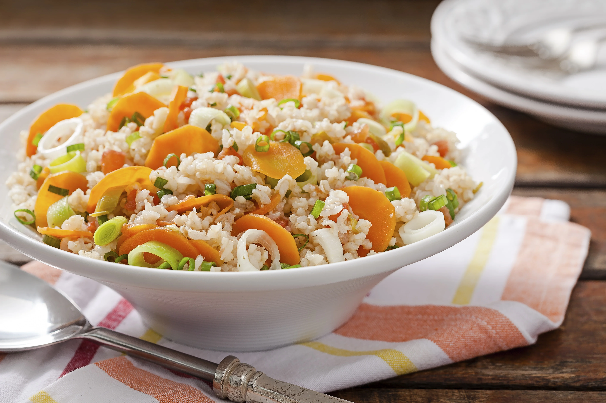
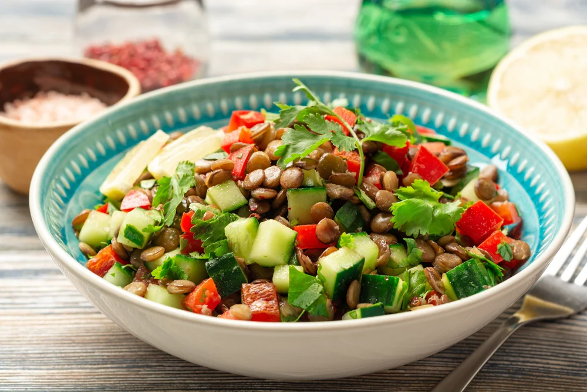

Abaixo estão doze receitas deliciosas e saudáveis que podem ajudar no emagrecimento e são saborosas. Cada receita inclui ingredientes, passo a passo e uma breve sinopse do prato. Lembre-se de adaptar as porções e ingredientes conforme suas necessidades e preferências individuais.

Salus
Nossas Receitas
Salada de Quinoa com Legumes Assados
Ingredientes:
- 1 xícara de quinoa cozida
- 1 abobrinha média, cortada em cubos
- 1 berinjela média, cortada em cubos
- 1 pimentão vermelho, cortado em tiras
- 1 cebola roxa, cortada em fatias
- 2 colheres de sopa de azeite de oliva
- Sal e pimenta a gosto
- Suco de 1 limão
- 2 colheres de sopa de folhas de manjericão fresco picado
Modo de Preparo:
- Preaqueça o forno a 200°C.
- Em uma assadeira, espalhe os legumes cortados.
- Regue os legumes com azeite de oliva e tempere com sal e pimenta.
- Asse no forno por cerca de 20-25 minutos ou até que os legumes estejam macios e levemente dourados.
- Em uma tigela grande, misture a quinoa cozida, os legumes assados, o suco de limão e o manjericão fresco.
- Tempere com sal e pimenta a gosto.
- Sirva a salada quente ou fria.
Wrap de Frango com Abacate
Ingredientes:
- 2 peitos de frango sem pele, grelhados e fatiados
- 1 abacate maduro, amassado
- 4 tortilhas integrais
- Folhas de alface ou espinafre baby
- 1 tomate grande, fatiado
- Molho de iogurte (opcional)
- Sal e pimenta a gosto
Modo de Preparo:
- Espalhe o abacate amassado sobre cada tortilha integral.
- Distribua as folhas de alface ou espinafre sobre o abacate.
- Distribua as folhas de alface ou espinafre sobre o abacate.
- Tempere com sal e pimenta a gosto.
- Enrole cada tortilha firmemente para formar wraps.
- Corte os wraps ao meio e sirva com molho de iogurte, se desejar.
Salmão Assado com Legumes ao Pesto
Ingredientes:
- 4 filés de salmão
- 2 abobrinhas médias, cortadas em rodelas
- 2 abobrinhas médias, cortadas em rodelas
- 1 xícara de brócolis em floretes
- 2 colheres de sopa de azeite de oliva
- Sal e pimenta a gosto
- Para o pesto: folhas de manjericão fresco, dente de alho, queijo parmesão ralado, pinhões ou nozes, azeite de oliva
Modo de Preparo:
- Pré-aqueça o forno a 200°C.
- Em uma assadeira, coloque os filés de salmão e os legumes.
- Regue com azeite de oliva, tempere com sal e pimenta.
- Asse por 15-20 minutos ou até que o salmão esteja cozido.
- Enquanto isso, prepare o pesto: misture as folhas de manjericão, alho, queijo parmesão e pinhões ou nozes em um processador de alimentos. Adicione azeite de oliva aos poucos até obter uma consistência desejada.
- Sirva o salmão e os legumes assados com o pesto por cima.
Espaguete de Abobrinha com Molho de Tomate Fresco
Ingredientes:
- 2 abobrinhas médias
- 2 tomates maduros, picados
- 2 dentes de alho, picados
- 1 colher de sopa de azeite de oliva
- Folhas de manjericão fresco
- Sal e pimenta a gosto
- Queijo parmesão ralado (opcional)
Modo de Preparo:
- Use um spiralizer ou descascador de legumes para transformar as abobrinhas em "espaguete".
- Em uma frigideira grande, aqueça o azeite de oliva e refogue o alho até ficar perfumado.
- Adicione os tomates picados e cozinhe por alguns minutos até que comecem a desmanchar.
- Tempere com sal e pimenta a gosto e adicione folhas de manjericão fresco.
- Adicione o espaguete de abobrinha à frigideira e misture bem para incorporar o molho.
- Cozinhe por mais alguns minutos até que a abobrinha esteja macia.
- Sirva com queijo parmesão ralado por cima, se desejar.
Bowl de Quinoa com Frango Grelhado e Vegetais
Ingredientes:
- 1 xícara de quinoa cozida
- 2 peitos de frango sem pele, grelhados e fatiados
- 1 cenoura grande, ralada
- 1 pepino médio, fatiado
- 1 abacate maduro, fatiado
- Suco de 1 limão
- 2 colheres de sopa de azeite de oliva
- Sal e pimenta a gosto
Modo de Preparo:
- Em uma tigela grande, coloque a quinoa cozida como base.
- Disponha o frango grelhado fatiado, a cenoura ralada, o pepino fatiado e o abacate sobre a quinoa.
- Em uma tigela pequena, misture o suco de limão, o azeite de oliva, sal e pimenta para fazer o molho.
- Regue o bowl com o molho de limão antes de servir.
Omelete de Espinafre e Queijo Feta
Ingredientes:
- 2 ovos
- 1 xícara de folhas de espinafre fresco
- 50g de queijo feta esfarelado
- Sal e pimenta a gosto
- 1 colher de chá de azeite de oliva
Modo de Preparo:
- Em uma tigela, bata os ovos com sal e pimenta.
- Aqueça o azeite em uma frigideira antiaderente em fogo médio.
- Adicione as folhas de espinafre à frigideira e cozinhe por alguns minutos até murchar.
- Despeje os ovos batidos sobre o espinafre na frigideira.
- Cozinhe a omelete por alguns minutos, mexendo levemente os bordos com uma espátula.
- Quando a parte inferior estiver firme, adicione o queijo feta por cima.
- Dobre a omelete ao meio e cozinhe por mais alguns segundos até o queijo derreter.
- Transfira para um prato e sirva imediatamente.
Smoothie Verde Energizante
Ingredientes:
- 1 xícara de espinafre fresco
- ½ xícara de abacaxi fresco em cubos
- 1 banana madura
- 1 colher de sopa de sementes de chia
- 1 xícara de água de coco ou água gelada
Modo de Preparo:
- Coloque todos os ingredientes no liquidificador.
- Bata até obter uma mistura homogênea e cremosa.
- Adicione mais água de coco ou água gelada, se necessário, para ajustar a consistência.
- Despeje em um copo e sirva imediatamente.
Salada de Atum com Feijão Branco e Tomate Cereja
Ingredientes:
- 1 lata de atum sólido em água, escorrido
- 1 lata de feijão branco, escorrido e lavado
- 1 xícara de tomate cereja cortado ao meio
- Suco de 1 limão
- 2 colheres de sopa de azeite de oliva
- Sal e pimenta a gosto
- Folhas de coentro fresco picado (opcional)
Modo de Preparo:
- Em uma tigela grande, misture o atum, o feijão branco e os tomates cereja.
- Em uma tigela pequena, misture o suco de limão, o azeite de oliva, sal e pimenta para fazer o molho.
- Regue a salada com o molho de limão e misture bem.
- Polvilhe com folhas de coentro fresco, se desejar, e sirva frio.
Barrinhas de Aveia e Banana
Ingredientes:
- 2 bananas maduras
- 1 xícara de aveia em flocos
- ¼ xícara de frutas secas (como passas ou cranberries)
- ¼ xícara de castanhas picadas (como amêndoas ou nozes)
- 1 colher de chá de canela em pó
- Pitada de sal
Modo de Preparo:
- Pré-aqueça o forno a 180°C e unte uma forma quadrada ou retangular pequena.
- Em uma tigela, amasse as bananas até ficarem bem misturadas.
- Adicione a aveia, frutas secas, castanhas, canela e sal à tigela. Misture bem até formar uma massa pegajosa.
- Transfira a massa para a forma preparada e pressione firmemente para nivelar.
- Asse no forno por 20-25 minutos ou até dourar.
- Deixe esfriar completamente antes de cortar em barrinhas.
- Guarde em um recipiente hermético e desfrute como um lanche nutritivo.

Tigelas de Arroz com Legumes Grelhados
Ingredientes:
- 2 xícaras de arroz integral cozido
- 1 pimentão amarelo, fatiado
- 1 abobrinha grande, cortada em rodelas
- 1 cenoura grande, cortada em tiras finas
- 1 cebola vermelha, cortada em fatias
- 2 colheres de sopa de molho de soja
- 2 colheres de sopa de óleo de gergelim
- Sal e pimenta a gosto
- Coentro fresco picado, para decorar
Modo de Preparo:
- Em uma frigideira grande ou churrasqueira, grelhe os legumes em fogo médio-alto até ficarem levemente carbonizados e macios.
- Em uma tigela grande, misture o arroz cozido com os legumes grelhados.
- Adicione o molho de soja, o óleo de gergelim, sal e pimenta a gosto, e misture bem.
- Divida em tigelas individuais e decore com coentro fresco.
- Sirva quente.
Macarrão Integral com Pesto de Rúcula e Tomate Seco
Ingredientes:
- 300g de macarrão integral
- 2 xícaras de rúcula
- 1/2 xícara de tomate seco
- 1 dente de alho
- 1/4 xícara de nozes
- 1/4 xícara de queijo parmesão ralado
- 1/3 xícara de azeite de oliva
- Sal e pimenta a gosto
Modo de Preparo:
- Cozinhe o macarrão integral de acordo com as instruções da embalagem.
- Enquanto isso, em um processador de alimentos, combine a rúcula, o tomate seco, o alho, as nozes, o queijo parmesão, o azeite de oliva, o sal e a pimenta.
- Processe até obter um pesto homogêneo.
- Misture o pesto com o macarrão cozido escorrido.
- Sirva quente ou frio.

Salada de Lentilhas com Legumes Crocantes
Ingredientes:
- 2 xícaras de lentilhas cozidas
- 1 cenoura, cortada em cubos pequenos
- 1 pepino, cortado em rodelas finas
- 1 pimentão amarelo, cortado em tiras
- 1/4 xícara de azeitonas pretas fatiadas
- 2 colheres de sopa de azeite de oliva
- Suco de 1 limão
- 1 colher de chá de cominho em pó
- Sal e pimenta a gosto
- Salsinha fresca picada, para decorar
Modo de Preparo:
- Em uma tigela grande, misture as lentilhas cozidas, a cenoura, o pepino, o pimentão e as azeitonas.
- Regue com azeite de oliva e suco de limão.
- Adicione o cominho, o sal e a pimenta, e misture bem.
- Decore com salsinha fresca antes de servir.
- Sirva frio como uma salada refrescante.